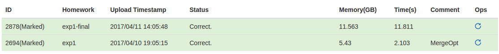

采用Q-gram算法，在创建索引的时候，预先设置一个 ，对于每次查询字符串 和编辑距离上限 ，可以计算出它和满足条件的字符串之间至少有 个完全相同的Q-gram，其中：
根据这种思想，在创建索引的时候，对于数据集中的每一个字符串，取出其每一个Q-gram插入到一颗Trie树中，建立反向列表，即实现 的查询;需要注意的是，同一个字符串可能具有相同的Q-gram，对此只需要对相同的Q-gram建一个索引即可。
在查询时，对于查询的字符串 ，可以根据上面的公式计算出 ，再从Trie树中取出 的每个Q-gram（此处相同的Q-gram要取出多次）对应的 ，而 即表明，所有满足编辑距离限制的字符串在 中至少出现了 次，所以我们只需要将在对应的 中出现次数不小于 的字符串取出来，再计算其和查询字符串 之间的编辑距离即可。
对于找出在若干个 中出现次数不小于 的 ，我们可以在创建索引的时候对每个 内部的元素排序，然后将这些 中较长的 放到一边，对于剩下的 ，使用类似计数排序的方式统计每个 出现的次数，然后再将这些 在较长的 个 通过二分查找的方式统计出现的次数，由此可以统计出出现次数不少于 的 ，然后再进行进一步的判断即可。
对于计算出的 的情况，则无法使用上面的方法，但是导致 情况出现唯有 较小，所以这部分直接判断即可。
在实践中，发现 速度最快，且满足内存限制;
回顾 的计算公式：
可以发现 越大，则越可能导致 ，但是 越小，则取出的 越大;故对于每个查询，应该选取最大的使得 的可能的 ，所以在可能的情况下，我们应该对更多的 建立反向列表;
注意到我们是使用Trie树来储存索引，所以我们可以直接在同一个Trie树中建立不同 的索引，而不会增加太多的空间;此方法即使我在程序中使用的方法。
Jaccard近似查询和编辑距离的近似查询非常类似，Jaccard的定义如下：
其中 是查询的单词集合, 是数据库中的某个记录的单词集合;将公式进行推到，即可得到：
即：
其中 表示查询字符串和数据库中某记录完全相同的单词个数。
所以，对于数据库中的每个记录，将其单词插入到Trie树中，建立 的反向列表;
对于每个查询，从Trie树中取出对应若干个的 ，然后用和编辑距离相同的方法统计出出现次数不小于 的 （由于方法完全相同，故在此不再赘述），在使用Trie树（此处的Trie树和建立索引的Trie树不是同一个）判断一下每个取出的 和查询是否满足集合即可。